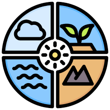
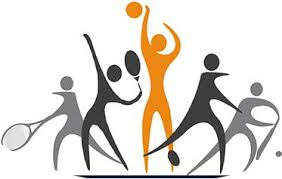

Read More

EDUCATION
Education is a process of learning and sharing knowledge, skills, and values, and it can take many forms:Learning
: Acquiring knowledge, skills, and values.Teaching
: Sharing knowledge, skills, and values.Development
: Developing critical thinking, creativity, problem-solving, andethical decision-making.Socialization
: Learning social norms and how to discern right from wrong.Lifelong learning
: Becoming a lifelong learner.Passing on knowledge
: Passing on knowledge from one generation to the next
NATURE
Nature is the physical world and everything in it that is not made by humans, including plants, animals, mountains, oceans, stars, and the processes that occur independently of people, such as weather, reproduction, and growth. The word "nature" comes from the Latin word natura, which comes from the past participle of nasci, meaning "to be born". The word was first used in the 14th century.Nature in Study
:Nature study is the study of the natural world, such as plants, animals, weather, and minerals, through direct observation. It's usually taught at an elementary level and is often done in an informal way

TECHNOLOGY
Technology is the use of scientific knowledge to create tools and processes that solve practical problems and improve human lives:Purpose
: Technology's purpose is to change the environment in which humans live, or to advance industry.Examples
: Technology includes mechanical, electronic, and industrial and manufacturing technologies.Characteristics
: Technology involves more than just scientific knowledge, and includes values, craft knowledge, and theoretical knowledge. It also involves organized ways of doing things.Impact
: Technology has made our lives easier, but it also raises security and privacy concerns.
SPORTS
The word “sport” itself has been around in the English language since the mid-15th century, when it was derived from the Old French desporter, meaning “to amuse, please, or play.” As a noun denoting a physical game or activity, the word grew in popularity in the late-15th century.Types of sports
Archery, Body Building, Boxing, Chess, Cycling, Downhill Skiing, Gymnastics, Horse Riding, Jet Skiing, Mixed Martial Arts, Motor sports (Auto & Bike), Powerlifting, Skating, Snooker, Snowboarding, Squash, Swimming, Weight Lifting, Wrestling
Partner Sports
Football, Cricket, Badminton, Diving , Skating, Golf,Tennis, Volleyball